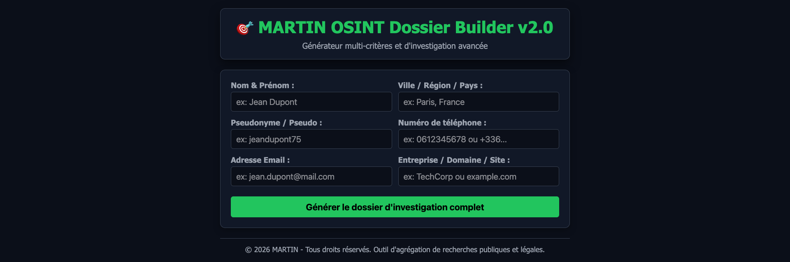

Pour mener à bien nos petites investigations numériques et recenser proprement les données publiques, rien ne vaut un outil fait maison. Je vous présente aujourd'hui la v2.0 de mon générateur de dossiers d'investigation : MARTIN OSINT Dossier Builder.
Conçu pour centraliser les recherches de manière structurée, cet outil permet d'injecter plusieurs critères de ciblage en simultané : Nom & Prénom, Zone géographique, Pseudo, Numéro de téléphone, Adresse email ou encore Domaine / Site web. Un clic sur le bouton de génération compile l'ensemble des requêtes pour dresser un profil clair et rigoureux, le tout en local, sans fuite vers des serveurs tiers. Parfait pour veiller au grain et analyser ce qui se trame sur le net !
